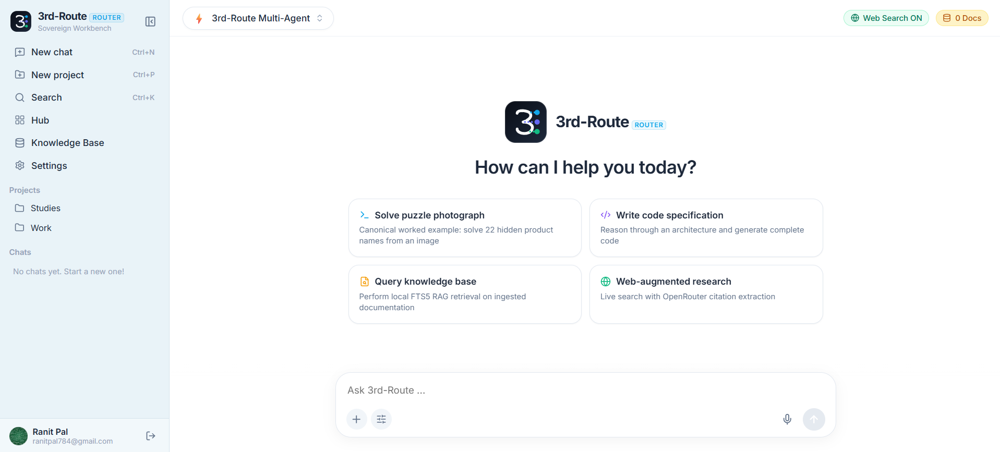

A sovereign AI workbench that runs entirely in your control. Intelligently orchestrates Vision analysis, local SQLite FTS5 reasoning, web research, and automated code generation with zero vendor lock-in.

Vision, Reasoning, & Code Generation
Local Document & Session Isolation
Zero-vector Instant Keyword Search
OpenRouter, Gemini, & Ollama Cloud
3rd-Route breaks the boundaries of conventional monolithic assistants. Instead of sending raw prompts to a single model, our intelligent router decomposes your problem and delegates each phase to specialized neural pipelines.
modelrouter.py uses
intelligent intent classification to inspect inputs and coordinate execution order: determining whether
image analysis is required, whether RAG is relevant, and when code generation should be invoked.
gpt-oss:20b) or your self-hosted LLM endpoints to write clean, typed,
modular code complete with unit tests and deployment instructions.
Unlike closed commercial cloud platforms that train models on your enterprise secrets and source code, 3rd-Route stores databases, vector contexts, chat logs, and ingested documents locally in self-contained SQLite containers.
Every component of 3rd-Route is built with modularity, performance, and developer freedom at its heart.
Integrated Auth0 authentication separates conversations and knowledge bases per user account, ensuring multi-tenant safety on shared machines.
The router coordinates Vision, Reasoning, and Coding stages based on natural language intent or CLI flags without hardcoded lock-in.
Native SQLite full-text search indexing provides instantaneous document chunking, BM25 ranking, and low-latency contextual recall.
Switch effortlessly between the sleek React desktop-inspired web UI and the headless command-line interface for automation scripts.
If the primary Gemini Vision provider experiences rate-limiting or outages, requests transparently cascade to backup OpenRouter vision models.
Packaged as clean release archives (.zip, .tar.gz) on GitHub Releases. Extract, plug in your keys, and launch without external cloud setup.
Get started with your sovereign AI workbench in under five minutes. No cloud accounts, no subscription fees, and no complicated Docker orchestration required.
Download the release archive from GitHub Releases. Unpack the files on macOS, Windows, or Linux.
Copy .env.example to .env. Add your OpenRouter and Ollama keys or connect local
models.
Drop PDFs, Markdown, and TXT files into the workbench or use the CLI command
knowledge.py --ingest.
Submit vision queries, analyze software architectures, and synthesize clean working code autonomously.
Direct invocation architecture: from entry orchestrator to vision, reasoning, and coding pipelines.

Download the latest 3rd-Route release archive, configure your local environment, and experience sovereign multimodal AI on your own terms.